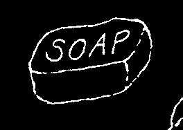
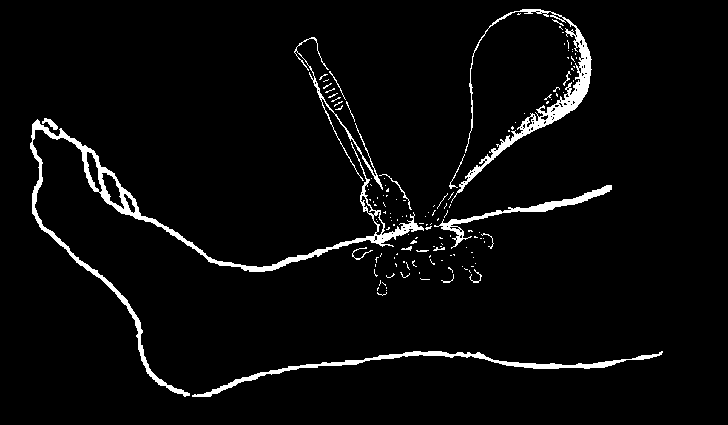
CUTS, SCRAPES, AND SMALL WOUNDS
Cleanliness is of first importance in preventing infection and helping wounds to heal.
To treat a wound...
First, wash your hands very well with soap and water.
If the wound is bleeding or oozing, wear gloves or plastic bags on your hands. Wash the skin around the wound with soap and cool, boiled water.
Now wash the wound well with cool, boiled water (and soap, if the wound has a lot of dirt in it. Soap helps clean but can damage the flesh).
When cleaning the wound, be careful to clean out all the dirt. Lift up and clean under any flaps of skin. You can use clean tweezers, or a clean cloth or gauze, to remove bits of dirt, but always boil them first to be sure they are sterile.
If possible, squirt out the wound with cool boiled water in a syringe or suction bulb.
Any bit of dirt that is left in a wound can cause an infection.
After the wound has been cleaned, apply a thin layer of antibiotic cream like
Neosporin if you have it. Then place a piece of clean gauze or cloth over the top. It should be light enough so that the air can get to the wound and help it to heal. Change the gauze or cloth every day and look for signs of infection (see p. 88).
If you have a dirty wound or a puncture wound, and have never had a tetanus immunization (see p. 388), get one within 2 days.
NEVER put animal or human feces or mud on a wound.
These can cause dangerous infections, such as tetanus.
NEVER put alcohol, tincture of iodine, or Merthiolate directly into a wound; doing so will damage the flesh and make healing slower.

LARGE CUTS: HOW TO CLOSE THEM
A recent cut that is very clean will heal faster if you bring the edges together so the cut stays closed.
Close a deep cut only if all of the following are true:
• the cut is less than 12 hours old,
• the cut is very clean, and
• it is impossible to get a health worker to close it the same day.
Before closing the cut, wash it very well with cool, boiled water (and soap, if the wound is dirty). If possible, squirt it out with a syringe and water. Be absolutely sure that no dirt or soap is left hidden in the cut.
There are two methods to close a cut:
'BUTTERFLY’ BANDAGES OF ADHESIVE TAPE

STITCHES OR SUTURES WITH THREAD
To find out if a cut needs stitches see if the edges of the skin come together by themselves. If they do, usually no stitches are needed.
To stitch a wound:
♦ Boil a sewing needle and a thin thread (nylon or silk is best) for 20 minutes.
♦ Wash the wound with cool, boiled water, as has been described.
♦ Wash your hands very well with boiled water and soap.
♦ Sew the wound like this:
HOW TO TIE A
GOOD KNOT
Make the first stitch in the middle of the cut, and tie it closed (1. and 2.).
If the skin is tough, hold the needle with a pair of pliers (or needle holder) that has been boiled.
Make enough other stitches to close the whole cut (3.).
Leave the stitches in place for 5 to 14 days (on the face 5 days; the body 10 days;
the hand or foot 14 days). Then remove the stitches: cut the thread on one side of the knot and pull the knot until the thread comes out.
WARNING: Only close wounds that are very clean and less than 12 hours old. Old, dirty, or infected wounds must be left open. Bites from people, dogs, pigs, or other animals should also be left open. Closing these can cause dangerous infections.
If the wound that has been closed shows any signs of infection, remove the stitches immediately and leave the wound open (see p. 88).

BANDAGES
Bandages are used to help keep wounds clean. For this reason, bandages or pieces of cloth used to cover wounds must always be clean themselves. Cloth used for bandages should be washed and then dried with an iron or in the sun, in a clean, dust free place.
Make sure the wound has first been cleaned, as shown on p. 84. If possible, cover the wound with a sterile gauze pad before bandaging. These pads are often sold in sealed envelopes in pharmacies.
Or prepare your own sterile gauze or cloth. Wrap it in thick paper, seal it with tape, and bake it for 20 minutes in an oven. Putting a pan of water in the oven under the cloth will keep it from charring.
If a bandage gets wet or dirt gets under it, take the bandage off, wash the cut again, and put on a clean bandage. Change the bandage every day.
It is better to have no bandage at all than one that is dirty or wet.
EXAMPLES OF BANDAGES:
Note: For children it is often better to bandage the whole hand or foot instead of one finger or toe.
The bandage will not come off as easily.
CAUTION: Be careful that a bandage that goes around a limb is not so tight it cuts off the flow of blood.
Many small scrapes and cuts do not need bandages. They heal best if washed with soap and water and left open to the air. The most important thing is to keep them clean.
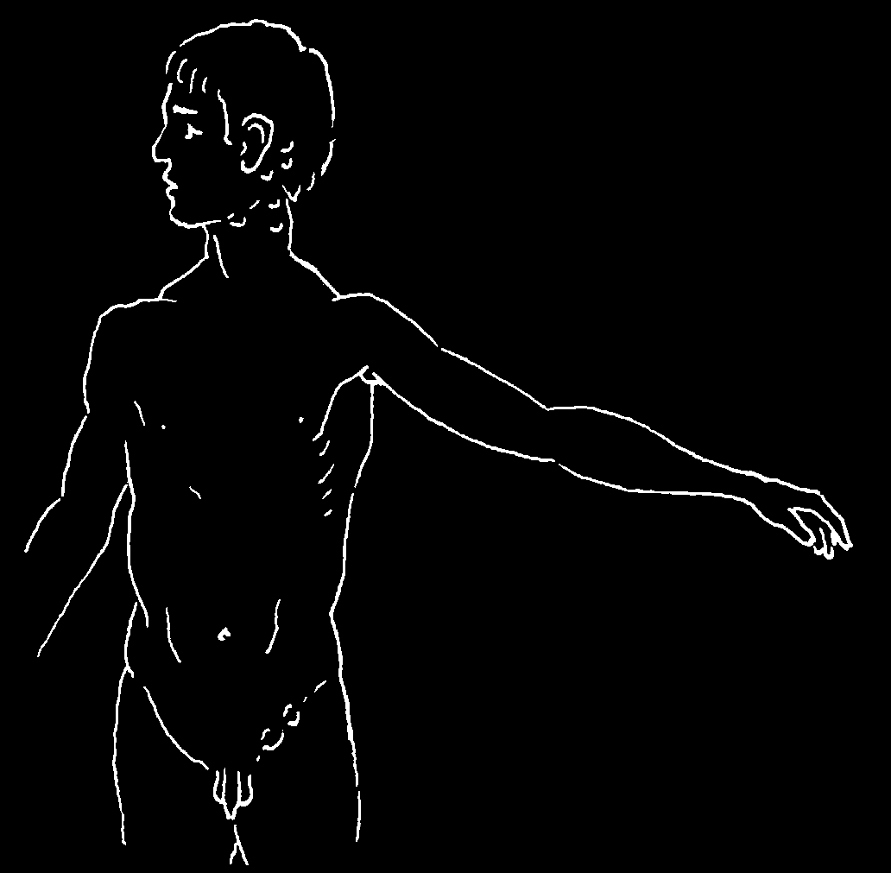
INFECTED WOUNDS:
HOW TO RECOGNIZE AND TREAT THEM
A wound is infected if:
• it becomes red, swollen, hot, and painful,
• it has pus,
• or if it begins to smell bad.
The infection is spreading to other parts of the body if:
• it causes fever,
• there is a red line above the wound,
• or if the lymph nodes become swollen and tender. Lymph nodes—often called
'glands’ — are little traps for germs that form small lumps under the skin when they get infected.
Swollen lymph nodes behind the ear are a sign of an infection on the head or scalp, often caused by sores or lice. Or German measles may be the cause.
Swollen nodes below the ear and on the neck indicate infections of the ear, face, or head (or tuberculosis).
Swollen nodes below the jaw indicate infections of the teeth or throat.
Swollen nodes in the armpit indicate an infection of the arm, head, or breast (or sometimes breast cancer).
Swollen nodes in the groin indicate an infection of the leg, foot, genitals, or anus.
Treatment of infected wounds:
♦ Put hot compresses over the wound for 20 minutes 4 times a day. Or hold an infected hand or foot in a bucket of hot water.
♦ Keep the infected part at rest and elevated (raised above the level of the heart).
♦ If the infection is severe or if the person has not been vaccinated against tetanus, use an antibiotic like an injectable penicillin (see p. 351, 352) and also give metronidazole
(p. 368).
WARNING: If the wound has a bad smell, if brown or gray liquid oozes out, or if the skin around it turns black and forms air bubbles or blisters, this may be gangrene.
Seek medical help fast. Meanwhile, follow the instructions for gangrene on p. 213.

WOUNDS THAT ARE LIKELY TO BECOME
DANGEROUSLY INFECTED
These wounds are most likely to become dangerously infected:
• puncture wounds and other deep wounds that do not bleed much
• wounds made where animals are kept: in corrals, pig pens, etc.
• large wounds with severe mashing or bruising
• bites, especially from pigs, dogs, or people
• bullet wounds
Special care for this type of 'high risk’ wound:
1. Wash the wound well with boiled water and soap. Remove all pieces of dirt, blood clots, and dead or badly damaged flesh. Squirt out the dirt using a syringe or suction bulb.
2. If the wound is very deep or if it is a bite, give an antibiotic such as penicillin (p. 351), doxycycline (p. 355), or cotrimoxazole (p. 357). Also give metronidazole (p. 368).
3. Never close this type of wound with stitches or 'butterfly’ bandages.
Leave the wound open. If it is very large, a skilled health worker or a doctor may be able to close it later.
The danger of tetanus is very great in people who have not been vaccinated against this deadly disease. To lower the risk, a person who has not been vaccinated against tetanus should get a tetanus vaccination (p. 147) or take an antitoxin for tetanus (p. 388). But be sure to take the precautions on p. 70 if using tetanus antitoxin made from horse serum.
If the wound is from an animal bite and there is a chance of rabies (see p. 181), get an immunization right away.

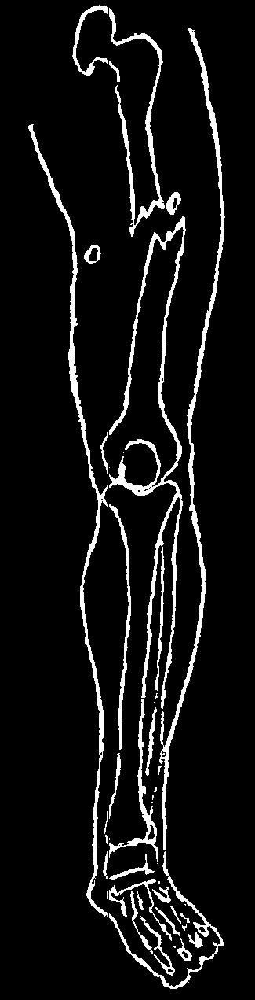
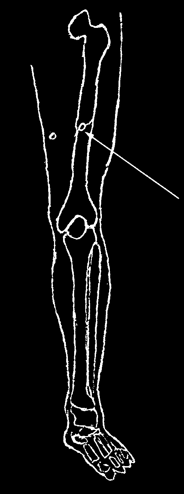

BULLET, KNIFE, AND OTHER SERIOUS WOUNDS
Danger of infection: Any deep bullet or knife wound runs a high risk of dangerous infection. For this reason an antibiotic, such as cloxacillin (p. 350) or clindamycin
(p. 358) should be used at once.
Persons who have not been vaccinated against tetanus should, if possible, be given an injection of an antitoxin for tetanus (p. 389), and also be vaccinated against tetanus.
If possible, seek medical help.
Bullet Wounds in the Arms or Legs
♦ If the wound is bleeding a lot, control the bleeding as shown on page 82.
♦ If the bleeding is not serious, let the wound bleed for a short while. This will help clean it out.
♦ Wash the wound with cool, boiled water. In the case of a gunshot wound, wash the surface (outside) only. It is usually better not to poke anything into the hole.
After cleaning, apply a clean bandage.
♦ Give antibiotics.
CAUTION:
If there is any possibility that the bullet has hit a bone, the bone may be broken.
Using or putting weight on the wounded limb (standing, for example) might cause a more serious break, like this:
If a break is suspected, it is best to splint the limb and not to use it for several weeks.
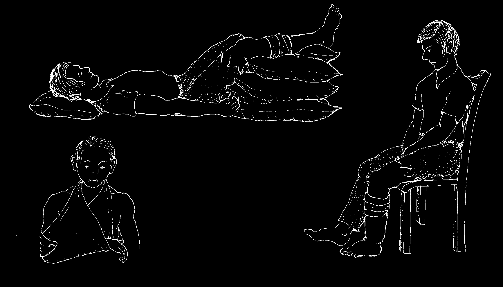


When the wound is serious, raise the wounded part a little higher than the heart and keep the injured person completely still.
This way the wound will heal
YES faster and is less likely to become infected.
Walking on an injured leg or sitting with the leg hanging down will slow healing and encourage infection.
NO
Make a sling like this to support an arm with a gunshot wound or other serious injury.
Deep Chest Wounds
Chest wounds can be very dangerous. Seek medical help at once.
♦ If the wound has reached the lungs and air is being sucked through the hole when the person breathes, cover the wound at once so that no more air enters.
Spread Vaseline or vegetable fat on a gauze pad or clean bandage and wrap it tightly over the hole like this:
(CAUTION: If this tight bandage makes breathing more difficult, try loosening or removing it.)
♦ Put the injured person in the position in which he feels most comfortable.
♦ If there are signs of shock, give proper treatment (see p. 77).
♦ Give antibiotics and painkillers.
Bullet Wounds in the Head
♦ Place the injured person in a 'half sitting’ position.
♦ Cover the wound with a clean bandage.
♦ Give antibiotics (penicillin).
♦ Seek medical help.


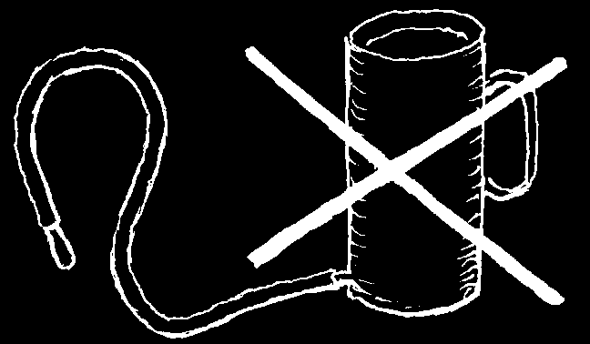
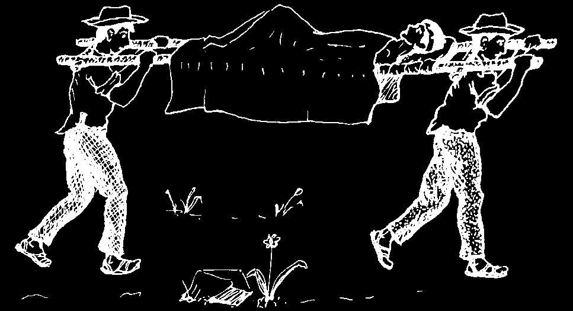
Deep Wounds in the Abdomen
Any wound that goes into the belly or gut is dangerous. Seek medical help immediately. But in the meantime:
Cover the wound with a clean bandage.
If the guts are partly outside the wound, cover them with a clean cloth soaked in lightly salted, cool, boiled water. Do not try to push the guts back in. Make sure the cloth stays wet.
If the wounded person is in shock, raise his feet higher than his head.
Give absolutely nothing by mouth: no food, no drink, not even water—unless it will take more than
2 days to get to a health center. Then give water only, in small sips.
If the wounded person is awake and thirsty, let him suck on a piece of cloth soaked in water.
Never give an enema, even if the belly swells up or the injured person does not move his bowels for days. If the gut is torn, an enema or purge can kill him.
Inject antibiotics (see the following page for instructions).
DO NOT WAIT FOR A HEALTH
WORKER.
IMMEDIATELY TAKE THE
INJURED PERSON TO THE
CLOSEST HEALTH CENTER
OR HOSPITAL. He will need an operation.
MEDICINE FOR A WOUND THAT GOES INTO THE GUT
(Also for appendicitis or peritonitis)
Until you can get medical help, do the following:
Inject ampicillin (p. 352), 1 g. (four 250 mg. ampules) every 6 hours. Also give metronidazole (p. 369), 1 g. every 12 hours.
If possible also give ciprofloxacin (p. 356), 500 mg. every 12 hours.
If there is no ampicillin:
Inject penicillin (crystalline, if possible, p. 352), 5 million Units immediately;
after that, 1 million units every 4 hours. Also give metronidazole and if possible, ciprofloxacin.
OR inject ceftriaxone, 1 g. every 24 hours. Also give metronidazole and ciprofloxacin.
If you do not have these antibiotics in injectable form, give ampicillin or penicillin by mouth, together with metronidazole and ciprofloxacin and very little water.
EMERGENCY PROBLEMS OF THE GUT (ACUTE ABDOMEN)
Acute abdomen is a name given to a number of sudden, severe conditions of the gut for which prompt surgery is often needed to prevent death. Appendicitis, peritonitis, and gut obstruction are examples (see following pages). In women, pelvic inflammatory disease (often with vaginal discharge, see p. 243), or an out of place pregnancy (in the tubes) can also cause an acute abdomen. The exact cause of acute abdomen may be uncertain until a surgeon cuts open the belly and looks inside.
If a person has continuous severe gut pain with vomiting, but does not have diarrhea, suspect an acute abdomen.
ACUTE ABDOMEN:
LESS SERIOUS ILLNESS:
Take to a hospital—
Probably can be treated surgery may be needed in the home or health center
• continuous severe pain that keeps
• pain that comes and goes (cramps)
getting worse
• moderate or severe diarrhea
• constipation and vomiting
• sometimes signs of an infection,
• belly swollen, hard, person protects it perhaps a cold or sore throat
• severely ill
• he has had pains like this before
• only moderately ill
If a person shows signs of acute abdomen, get him to a hospital as fast as you can.


Obstructed Gut
An acute abdomen may be caused by something that blocks or 'obstructs’ a part of the gut, so that food and stools cannot pass. More common causes are:
• a ball or knot of roundworms (Ascaris, p. 140)
• a loop of gut that is pinched in a hernia (p. 177)
• a part of the gut that slips inside the part below it (intussusception)
Almost any kind of acute abdomen may show some signs of obstruction. Because it hurts the damaged gut to move, it stops moving.
Signs of an obstructed gut:
Sudden vomiting with great force! The vomit may shoot out a meter or more. It may
Steady, severe pain in the belly.
have green bile in it or
This child’s belly is swollen, hard, and very smell and look like feces.
tender. It hurts more when you touch it. He tries to protect his belly and keeps his legs doubled up. His belly is often 'silent’. (When you put your ear to it, you hear no sound of normal gurgles.)
He is usually constipated (little or no bowel movements). If there is diarrhea, it is only a little bit.
Sometimes all that comes out is some bloody mucus.
Get this person to a hospital as fast as possible. His life is in danger and surgery may be needed.
Appendicitis, Peritonitis
These dangerous conditions often require surgery. Seek medical help fast.
small stomach
Appendicitis is an infection of the intestine appendix, a finger shaped sac attached to the large intestine in the lower right hand part of the belly. An infected appendix sometimes bursts open, causing peritonitis.
large intestine
Peritonitis is an acute, serious infection of the lining of the cavity or bag that holds the gut. It results when the appendix or
APPENDIX
another part of the gut bursts or is torn.
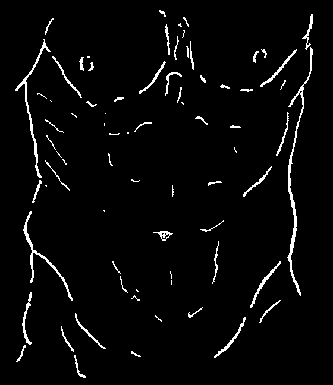
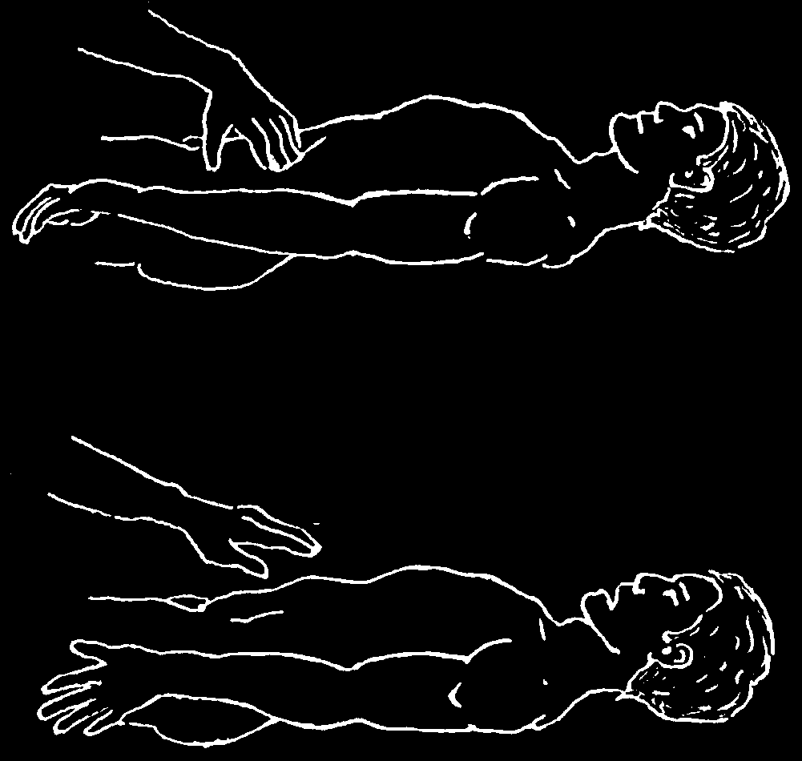
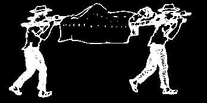
Signs of appendicitis:
• The main sign is a steady pain in the belly that gets worse and worse.
• The pain often begins around the navel
('bellybutton’)
but it soon moves to the lower right side.
• There may be loss of appetite, vomiting, constipation, or a mild fever.
TESTS FOR APPENDICITIS OR PERITONITIS:
Have the person cough and see if this causes sharp pain in the belly.
Or, slowly but forcefully, press on the abdomen a little above the left groin until it hurts a little.
Then quickly remove the hand.
If a very sharp pain (rebound pain) occurs when the hand is removed, appendicitis or peritonitis is likely.
If no rebound pain occurs above the left groin, try the same test above the right groin.
IF IT SEEMS THAT A PERSON HAS APPENDICITIS OR PERITONITIS:
♦ Seek medical help immediately.
If possible, take the person where he can have surgery.
♦ Do not give anything by mouth and do not give an enema. Only if the person begins to show signs of dehydration, give sips of water or Rehydration Drink (p. 152) made with sugar and salt—but nothing more.
♦ The person should rest very quietly in a half-sitting position.
Note: When peritonitis is advanced, the belly becomes hard like a board, and the person feels great pain when his belly is touched even lightly. His life is in danger.
Take him to a medical center immediately and on the way give him the medicines indicated at the top of page 93.
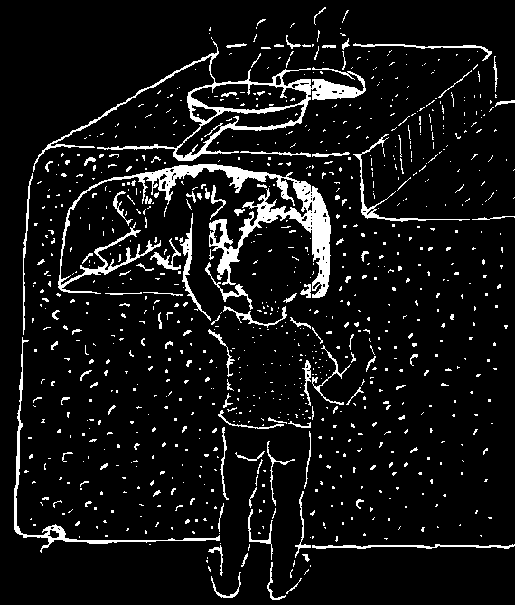
BURNS
Prevention:
Most burns can be prevented. Take special care with children:
Do not let small babies go near a fire.
Keep lamps and matches out of reach.
Turn handles of pans on the stove so children cannot reach them.
Keep chemicals in closed containers and keep them away from children.
Minor Burns that Do Not Form Blisters (1st degree)
To help ease the pain and lessen the damage caused by a minor burn, put the burned part in cood water at once. No other treatment is needed. Take aspirin or acetaminophen for pain. Avoid giving aspirin to children.
Burns that Cause Blisters, Chemical Burns, and Electric
Burns (2nd degree).
Do not break blisters. Do not put ice on the burn. If the blisters are broken, wash gently with soap and boiled water that has been cooled. Rinse with water for 30 minutes. Then put a piece of sterile gauze on the burn loosely so it does not put pressure on the wound. Never smear on grease or butter.
Covering the burn with honey or the inside meat of an aloe plant helps prevent and control infection and speed healing. Gently wash off the old honey or aloe and put on new at least twice a day.
It is very important to keep the burn as clean as possible. Protect it from dirt, dust, and flies.
If signs of infection appear—pus, bad smell, fever, or swollen lymph nodes—apply compresses of warm salt water (1 teaspoon salt to 1 liter water) 3 times a day. Boil both the water and cloth before use. With great care, remove the dead skin and flesh. You can spread on a little antibiotic ointment such as Neosporin (p. 370). In severe cases, consider taking an antibiotic such as dicloxacillin (p. 350), clindamycin
(p. 358), or ciprofloxacin (p. 358).
Deep Burns (3rd degree)
These are burns that destroy the skin and expose raw or charred flesh, or do not show until a few hours after a chemical gets on the skin. They are always serious, as are any burns that cover large areas of the body. Take the person to a health center at once. In the meantime wrap the burned part with a very clean cloth or towel moistened with clean water.
If it is impossible to get medical help, treat the burn as described above. If you do not have Vaseline, leave the burn in the open air, covering it only with a loose cotton cloth or sheet to protect it from dust and flies. Keep the cloth very clean and change it each time it gets dirty with liquid or blood from the burn. Give an antibiotic.
Never put grease, fat, hides, coffee, herbs, or feces on a burn.
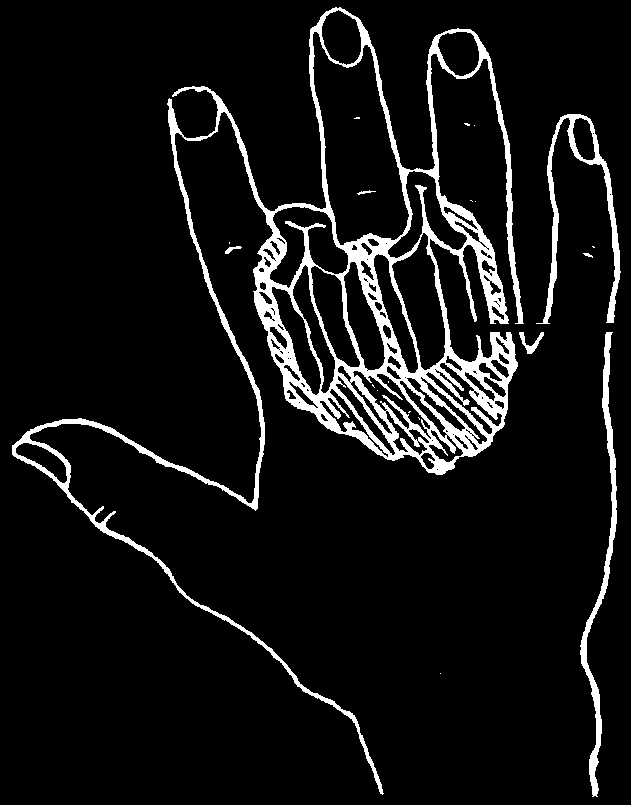
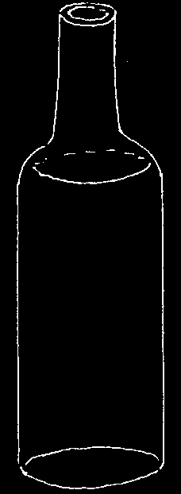
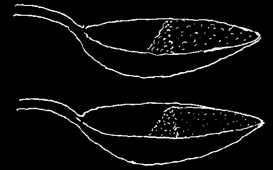
Special Precautions for Very Serious Burns
Any person who has been badly burned can easily go into shock (see p. 77)
because of combined pain, fear, and the loss of body fluids from the oozing burn.
Comfort and reassure the burned person. Give him aspirin or acetaminophen for the pain and codeine if you can get it. Bathing open wounds in slightly salty water also helps calm pain. Put 1 teaspoon of salt for each liter of cool, boiled water.
Give the burned person plenty of liquid. If the burned area is large (more than twice the size of his hand), make up the following drink:
To a liter of water add:
half a teaspoon of salt and half a teaspoon of bicarbonate of soda.
Also put in 2 or 3 tablespoons of sugar or honey and some orange or lemon juice if possible.
The burned person should drink this as often as possible, especially until he urinates frequently. He should drink 4 liters a day for a large burn, and up to 12 liters a day for a very large burn.
It is important for persons who are badly burned to eat foods rich in protein
(see p. 110). No type of food needs to be avoided.
Burns around the Joints
When someone is badly burned between the fingers, in the armpit, or at sterile gauze other joints, gauze pads with Vaseline pads with on them should be put between the
Vaseline burned surfaces to prevent them from growing together as they heal. Also, fingers, arms, and legs should be straightened completely several times a day while healing. This is painful but helps prevent stiff scars that limit movement. While the burned hand is healing, the fingers should be kept in a slightly bent position.
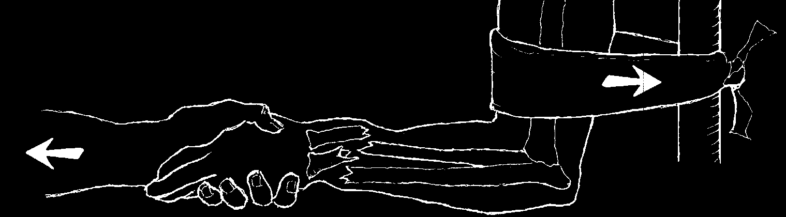
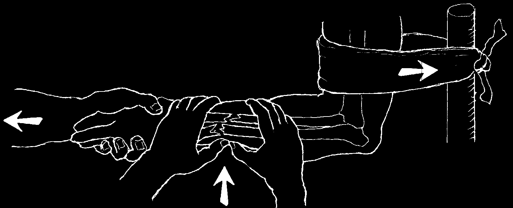
BROKEN BONES (FRACTURES)
When a bone is broken, the most important thing to do is keep the bone in a fixed position. This prevents further damage and lets it mend.
Before trying to move or carry a person with a broken bone, keep the bones from moving with splints, strips of bark, or a sleeve of cardboard. Later a plaster cast can be put on the limb at a health center, or perhaps you can make a 'cast’ according to local tradition (see p. 14).
Setting broken bones: If the bones seem more or less in the right position, it is better not to move them—this could do more harm than good.
If the bones are far out of position and the break is recent, you can try to 'set’ or straighten them before putting on cast. The sooner the bones are set, the easier it will be. Before setting, if possible give diazepam to relax the muscles and calm pain
(see p. 389). Or give codeine (p. 383).
HOW TO SET A BROKEN WRIST
Pull the hand with a slow, steady force for 5 to 10 minutes, increasing the force, to separate the bones.
With one person still pulling the hand, have another gently line up and straighten the bones.
WARNING: It is possible to do a lot of damage while trying to set a bone. Ideally, it should be done with the help of someone with experience. Do not jerk or force.
HOW LONG DOES IT TAKE FOR BROKEN BONES TO HEAL?
The worse the break or the older the person, the longer healing takes. Children’s bones mend rapidly. Those of old people sometimes never join. A broken arm should be kept in a cast for about a month, and no force put on it for another month.
A broken leg should remain in a cast for about 2 months.


BROKEN THIGH OR HIP BONE
A broken upper leg or hip often needs special attention. It is best to splint the whole body like this:
and to take the injured person to a health center at once.
BROKEN NECKS AND BACKS
If there is any chance a person’s back or neck has been broken, be very careful when moving him. Try not to change his position. If possible, bring a health worker before moving him. If you must move him, do so without bending his back or neck.
For instructions on how to move the injured person, see the next page.
BROKEN RIBS
These are very painful, but almost always heal on their own. It is better not to splint or bind the chest. The best treatment is to take aspirin or acetaminophen
(avoid giving aspirin to children)—and rest. To keep the lungs healthy, take 4 to 5 deep breaths in a row, every 2 hours. Do this daily until you can breathe normally. At first, this will be very painful. It may take months before the pain is gone completely.
A broken rib does not often puncture a lung. But if a rib breaks through the skin, or if the person coughs blood or develops breathing difficulties (other than pain), use antibiotics and seek medical help.
BROKEN BONES THAT BREAK THROUGH THE SKIN (OPEN FRACTURES)
Since the danger of infection is very great in these cases, it is always better to get help from a health worker or doctor in caring for the injury. Wear gloves or plastic bags on your hands and clean the wound and the exposed bone very gently but thoroughly with cool, boiled water. Cover with a clean cloth. Never put the bone back into the wound until the wound and the bone are absolutely clean.
Splint the limb to prevent more injury.
If the bone has broken the skin, use an antibiotic immediately to help prevent infection: dicloxacillin (p. 350), clindamycin (p. 358), or ciprofloxacin (p. 358).
CAUTION: Never rub or massage a broken limb or a limb that may possibly be broken.
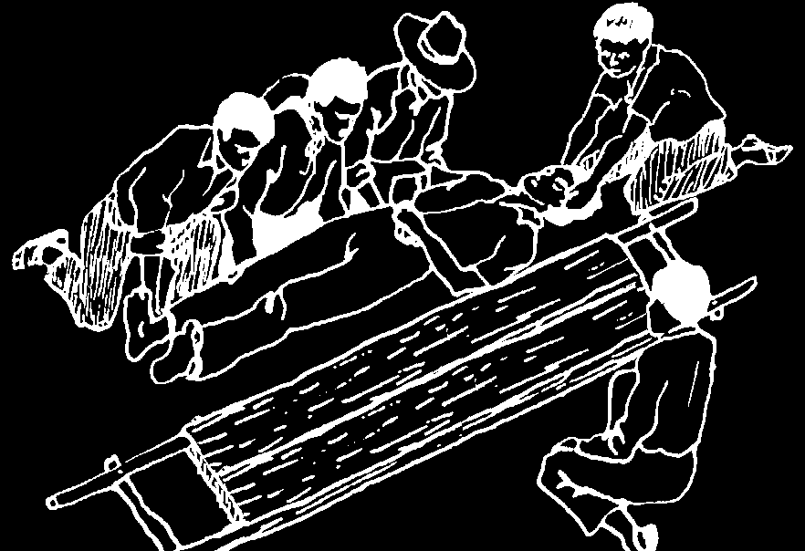


HOW TO MOVE A BADLY INJURED PERSON
With great care, lift the injured person without bending him anywhere. Take special care that the head and neck do not bend.
Have another person put the stretcher in place.
With the help of everyone, place the injured person carefully on the stretcher.
tightly
If the neck is injured or broken, put tightly folded folded clothing or sandbags on each side of the head clothing to keep it from moving.
When carrying, try to keep the feet up, even on hills.
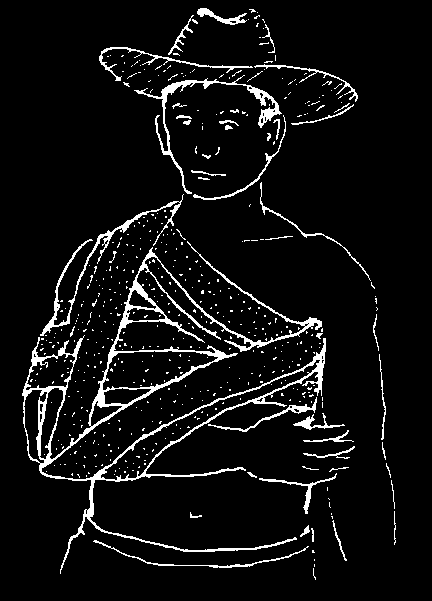
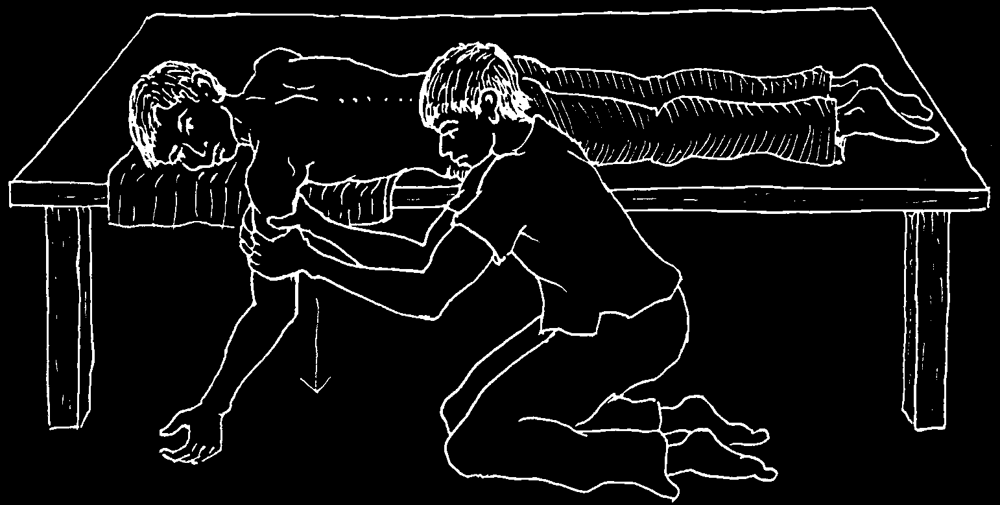
DISLOCATIONS
(BONES THAT HAVE COME OUT OF PLACE AT A JOINT)
Three important points of treatment:
♦ Try to put the bone back into place. The sooner the better!
♦ Keep it bandaged firmly in place so it does not slip out again (about a month).
♦ Avoid forceful use of the limb long enough for the joint to heal completely
(2 or 3 months).
HOW TO SET A DISLOCATED SHOULDER:
Have the injured person lie face down on a table or other firm surface with his arm hanging over the side. Pull down on the arm toward the floor, using a strong, steady force, for 15 to 20 minutes. Then gently let go. The shoulder should 'pop’
back into place.
Or attach something to the arm that weighs 5 to 10 kg. (start with 5 kg., but do not go higher than 10 kg.) and leave it there for 15 to 20 minutes.
After the shoulder is in place, bandage the arm firmly against the body. Keep it bandaged for a week to a month.
To prevent the shoulder from becoming completely stiff, unbandage the arm for a few minutes 3 times a day and, with the arm hanging at the side, move it gently in narrow circles.
Do not lift any weight with the arm for a month so the shoulder does not pop out of place again.
If you cannot put the dislocated limb back in place, look for medical help at once. The longer you wait, the harder it will be to correct.